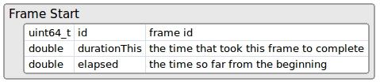
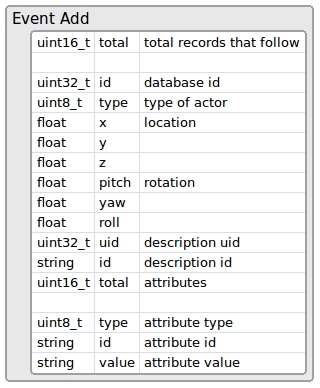
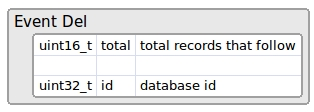
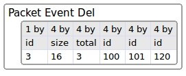
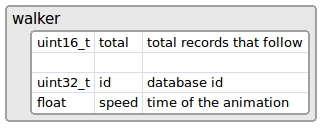
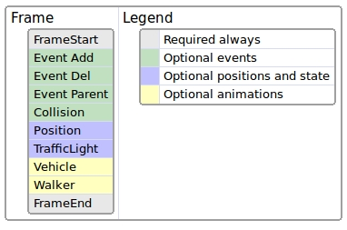
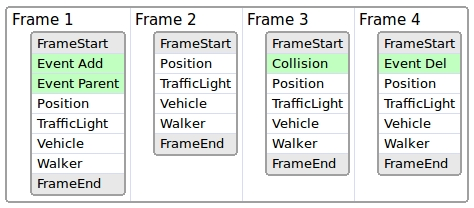

记录器二进制文件格式¶
记录器系统将重放模拟所需的所有信息保存在二进制文件中，对多字节值使用小端字节顺序。
在下一张代表文件格式的图像中，我们可以快速查看所有详细信息。图像中可视化的每个部分将在以下部分中进行解释：

总之，该文件格式有一个小头，其中包含一般信息（版本、魔术字符串、日期和使用的地图）和不同类型的数据包集合（目前我们使用 10 种类型，但将来会继续增长） 。

1- 二进制字符串 ¶
字符串首先使用其长度进行编码，然后是其字符（不以空字符结尾）。例如，字符串“Town06”将保存为十六进制值：06 00 54 6f 77 6e 30 36

2- 信息头 ¶
信息标头包含有关记录文件的一般信息。基本上，它包含版本和一个魔术字符串，用于将该文件标识为记录器文件。如果标题发生变化，那么版本也会发生变化。此外，它还包含一个日期时间戳，以及从 1900 年开始的秒数，并且还包含一个字符串，其中包含用于记录的地图名称。

示例信息头是：

3- 数据包 ¶
每个数据包以两个字段（5 个字节）的小标头开头：

- id: 数据包类型
- size: 数据包数据的大小
头信息后面跟着数据。数据是可选的，大小为 0 表示数据包中没有数据。如果大小大于 0，则表示数据包有数据字节。因此，需要根据数据包的类型重新解释数据。
数据包的头很有用，因为我们可以在播放时忽略那些我们不感兴趣的数据包。我们只需要读取数据包的头（前 5 个字节）并跳过数据包的数据跳转到下一个数据包：

数据包的类型有：

我们建议用户自定义数据包使用超过 100 的 id，因为这个列表将来会不断增长。
数据包 0 - 帧开始 ¶
该数据包标记新帧的开始，并且它将是开始每个帧的第一个数据包。所有数据包都需要放置在Frame Start和Frame End之间。

因此，经过时间 + 持续时间 = 下一帧经过的时间。
数据包 1 - 帧结束 ¶
该帧没有数据，仅标记当前帧的结束。这有助于重放器在新一帧开始之前知道每一帧的结束。通常，下一帧应该是帧起始数据包以开始新帧。

数据包 2 - 事件添加 ¶
这个数据包说明了我们需要在当前帧创建多少个参与者。

字段总计表示后面有多少条记录。每条记录都以id字段开头，即参与者在记录时所拥有的 id（在播放时，该 id 可以在内部更改，但我们需要使用此 id ）。参与者的类型可以有以下可能的值：
- 0 = 其他
- 1 = 车辆
- 2 = 行人
- 3 = 交通灯
- 4 = 无效
之后，继续我们想要创建参与者的位置和旋转。
在我们得到参与者的描述之后。描述 uid 是描述的数字 ID，而 id 是文本 ID，例如"vehicle.seat.leon"。
然后是其属性的集合，例如颜色、轮子数量、参与者等。属性的数量是可变的，应该类似于以下内容：
- number_of_wheels = 4
- sticky_control = true
- color = 79,33,85
- role_name = autopilot
数据包 3 - 事件删除 ¶
这个数据包说明了这一帧需要销毁多少个参与者。

它有记录总数，每条记录都有要删除的参与者的ID 。
例如，这个数据包可能是这样的：

数字 3 将数据包标识为事件删除。数字 16 是数据包数据的大小（4 个字段，每个字段 4 字节）。因此，如果我们不想处理这个数据包，我们可以跳过接下来的 16 个字节，直接进入下一个数据包的开头。接下来的 3 表示后面的总记录，每条记录都是要删除的参与者的 id。因此，我们需要在这一帧中删除参与者 100、101 和 120。
数据包 4 - 事件父级 ¶
该数据包说明哪个参与者是另一个参与者（父母）的孩子。

第一个 id 是子参与者，第二个 id 是父参与者。
数据包 5 - 事件碰撞 ¶
如果两个参与者之间发生碰撞，它将被注册到这个数据包中。目前，只有具有碰撞传感器的参与者才会报告碰撞，因此目前只有英雄车辆会自动连接该传感器。

id只是一个用于在内部标识每次碰撞的序列。同一帧中可能会发生同一对参与者之间的多次碰撞，因为物理帧速率是固定的，并且同一渲染帧中通常存在多个物理子步骤。
数据包 6 - 位置 ¶
该数据包记录场景中存在的车辆和行人类型的所有参与者的位置和方向。

数据包 7 - 交通灯 ¶
该数据包记录了场景中所有交通灯的状态。这意味着它存储状态（红色、橙色或绿色）以及等待更改为新状态的时间。

数据包 8 - 车辆动画 ¶
该数据包记录了车辆、自行车和山地自行车的动画。该数据包存储了油门、方向盘、删车、手刹和排挡输入，然后在播放时设置它们。

数据包 9 - 行人动画 ¶
该数据包记录了行人的动画。它只是保存动画中使用的行人的速度。

4- 帧布局 ¶
一个帧由多个数据包组成，其中所有数据包都是可选的，除了那些在该帧中具有开始和结束的数据包之外，它们必须始终存在。

事件 数据包仅存在于它们发生的帧中。
位置 和 交通灯 数据包应该存在于所有帧中，因为它们需要移动所有参与者并将交通灯设置为其状态。它们是可选的，但如果它们不存在，那么重放器将无法移动或设置交通灯的状态。
动画包也是可选的，但默认情况下它们会被记录。这样行人就会被动画化，并且车轮也会跟随车辆的方向。
5- 文件布局 ¶
文件的布局以信息头开始，然后是分组的数据包集合。每组中的第一个是帧开始数据包，最后一个是帧结束数据包。在这两者之间，我们还可以找到其余的数据包。

通常，最好首先拥有有关事件的所有数据包，然后再拥有有关位置和状态的数据包。
事件包是可选的，因为它们在发生时出现，所以我们可以有这样的布局：

在第 1 帧中，创建了一些参与者并重新设置了父级，因此我们可以在图像中观察其事件。在第 2 帧中没有事件。在第 3 帧中，一些参与者发生了碰撞，因此碰撞事件会随该信息一起出现。在第 4 帧中，参与者被销毁。